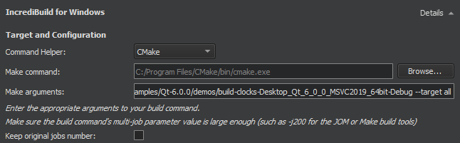
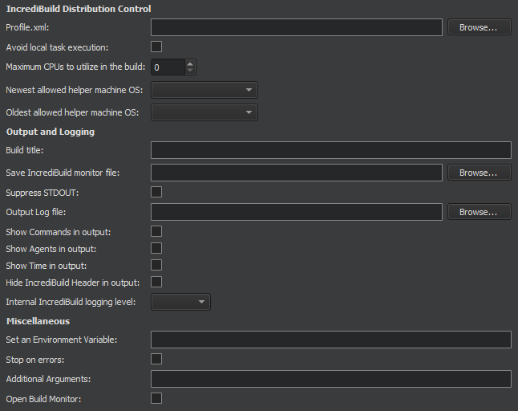

IncrediBuild Build Configuration
Specify build settings for the selected kit in Projects > Build & Run > Build > Build Settings.
You can specify build steps and clean steps for IncrediBuild.
IncrediBuild Build Steps
To use IncrediBuild, select Add Build Step > IncrediBuild for Linux or IncrediBuild for Windows.

IncrediBuild automatically detects the build step by iterating over the build steps you already defined. The initial build step settings will be part of your IncrediBuild build step, so your usual build tool will still be used, but with the added benefit of IncrediBuild's build acceleration and graphical Build Monitor.
In the Target and configuration group, specify the command helper and arguments that will be used to construct the build command.
The build errors and warnings are parsed and displayed in Issues.
Select the Keep original jobs number check box to stop IncrediBuild from overriding the -j command-line switch, which controls the number of processes that the build tools executed by Qt Creator run in parallel. The default value set by IncrediBuild is 200.
The distribution control settings to specify depend on whether you are using Linux or Windows.
Distribution Control Settings on Linux

You can specify the following settings for Linux builds:
- Nice value is a numeric value between -20 and 19
- Force remote forces
allow_remotetasks to remote Helpers. - Alternate tasks preference
Distribution Control Settings on Windows

You can specify the following settings for Windows builds:
| Setting | Value |
|---|---|
| Profile.xml | Defines how Automatic Interception Interface handles processes in a distributed job. It is not necessary for Visual Studio or Make and Build tools builds, but can be used to add configuration options if those builds use processes that are not included in those packages. It is required to configure distributable processes in Dev Tools builds. |
| Avoid local task execution | Frees up resources on the initiator machine. This might be beneficial for distribution if the initiator turns into a bottleneck for the build because of high CPU usage. |
| Maximum CPUs to utilize in the build | Specifies the maximum amount of remote cores to use in the build. Overrides the corresponding global setting. |
| Newest allowed helper machine OS Oldest allowed helper machine OS | Specify the newest and oldest operating system installed on a Helper machine to be allowed to participate as a Helper in the build. |
| Build title | Specifies a custom header line which will be displayed in the beginning of the build output text. This title will also be used for the Build History and Build Monitor displays. |
| Save IncrediBuild monitor file | Writes a copy of the build progress (.ib_mon) file to the specified location. If only a folder name is given, IncrediBuild generates a GUID for the file name. A message that has the location of the saved .ib_mon file is added to the end of the build output. |
| Suppress STDOUT | Does not write anything to the standard output. |
| Output Log file | Writes build output to a file. |
| Show Commands in output | Shows the command-line that IncrediBuild uses to build the file. |
| Show Agents in output | Shows the Agent used to build each file. |
| Show Time in output | Shows the start and finish time for each file built. |
| Hide IncrediBuild Header in output | Suppresses the IncrediBuild header in the build output. |
| Internal IncrediBuild logging level | Overrides the internal Incredibuild logging level for this build. Does not affect output or any user accessible logging. Used mainly to troubleshoot issues with the help of IncrediBuild support. |
| Set an Environment Variable | Sets or overrides environment variables for the context of the build. |
| Stop on errors | Stops the execution as soon as an error is encountered. This is the default behavior in Visual Studio builds, but not for Make and Build tools or Dev Tools builds. |
| Additional Arguments | Arguments that are concatenated to the final build console command line. |
| Open Build Monitor | Opens an IncrediBuild Build Monitor that graphically displays the build's progress once the build starts. |
IncrediBuild Clean Steps
When building with IncrediBuild, you can add arguments and targets for the clean command in Clean Steps.
The build errors and warnings are parsed and displayed in Issues.
See also Activate kits for a project, Add clean steps, Configure projects for building, Configure projects for running, Open projects, Configuring projects, and IncrediBuild.